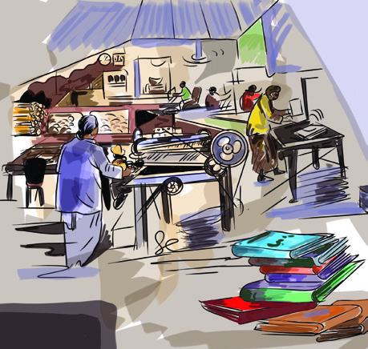
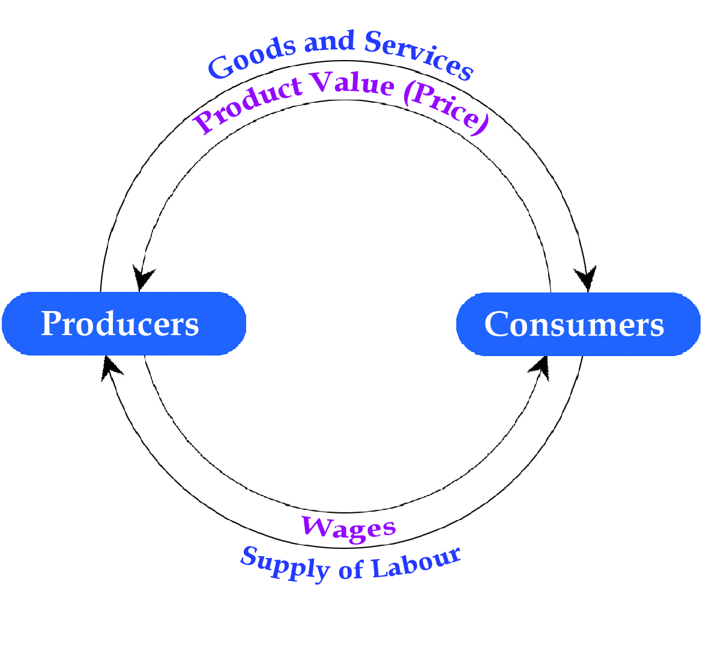
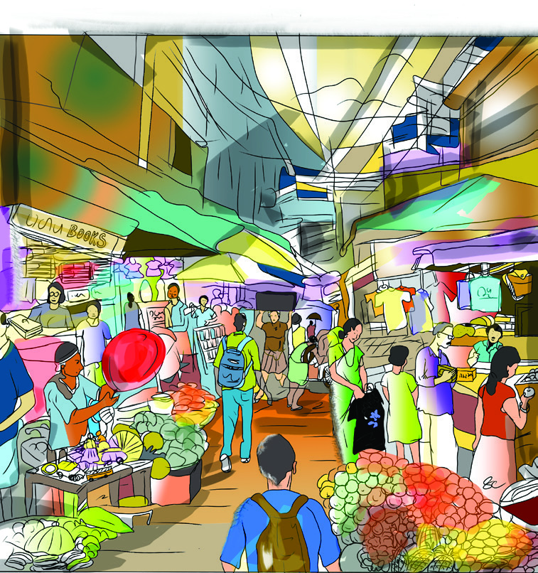

Observe picture 6.1. We can see, different things here which are helpful in our
day to day life to satisfy our needs. Some of these are used to satisfy our basic
needs and some others are used to fulfill our wants. Sort and write them in the
table given below in an appropriate manner.
Fig 6.1
Price and Market
6
Page 27
Page 28





124
Part II
Social Science II
Fulfills Basic Needs
Fulfill Wants
Food
Vehicle
Needs such as air, food,water, cloth and shelter are essential
for human life. So these are included in the basic needs or
primary needs. There are other needs which help to make
our life happy. This kind of needs, which help in achieving
life aspirations but not essential to our survival, are generally
considered as wants. The needs and wants of persons are
different from one another. A person can fulfill such desires
depending on the available economic resources only.
It is clear that modern man has a lot of needs and wants such
as food, cloth, shelter, education, health and entertainment.
How are these goods and services, which help to fulfill needs,
produced? Producers recognise our needs and produce goods
and services accordingly.
For example, notebook is very essential for a student. The
production process of a notebook is completed by using
various materials.
Observe picture. Try to understand different materials used for
the production of notebooks.
Raw Materials
Factory
Product
Page 29


125
Standard IX
Price and Market
Complete the following word sun by including more inputs.
For making notebooks, we use raw materials such as bamboo
and wood pulp along with machines, fuel, buildings, land
and labour. Such factors which are used in the production
process are called inputs and goods produced by using these
inputs are called outputs. The process of converting input into
output is called production. All products that we consume are
made through production process.
Inputs
......................................
Machines
Buildings
..........................
..........................
............................
Land
Organisation
Production Function
If the demand for a product is high then its production
also has to be increased. For this, what are the different
possible methods used by the producers?
Quantity of inputs can be increased.
Better technology can be used.
Productivity of factors of production can be increased.
In these ways, the quantity of the commodities produced as per
requirements can be increased or decreased. Quantity of output
depends on the quantity of inputs used for its production and
their productivity.
Page 30


126
Part II
Social Science II
Production function is the technical relationship between inputs used in the
production process and the produced outputs within a specific period of time.
Let's write this relationship in the form of an equation. Let the
factors of production land, labour, capital and organisation
be indicated as N,L,K,O and consider the total output as Q,
production function can be written as follows:
Q = f (N,L,K,0) (Q is the function of N,L,K,O)
Q- Total quantity of output
N- Land
L-Labour
K-Capital (technology, buildings, tools, financial capital etc.)
O - Organisation
Fixed Inputs and Variable Inputs
It is possible to produce desirable quantity of output using
different amounts of inputs. Can we increase the quantity
of all inputs? It is not possible to change the quantity of all
inputs within a short period. Such inputs which cannot
be changed in a short period of time are called fixed Inputs.
Land,
Organisation
etc
are
examples of fixed inputs.
But in a short period, quantity
of output can be increased
by changing the quantity of
labour, capital etc. Such inputs
the quantity of which can be
changed within a short period of
time are called variable inputs.
Short-run and Long-run
production function
Production
function
is
defined
differently in the short-run and long-
run. The situation in which at least
one input is fixed in the production
process is called short-run production
function and the situation in which all
inputs are variable is called long-run
production function.
Page 31


127
Standard IX
Price and Market
Complete the following diagram by including the features of
short-run inputs.
......................................
Labour
Variable
Inputs
.................................
......................................
Organisation
Consumption, Consumer
People use the goods and services produced through the
production process to meet their needs. Such buying and
using of goods and services to fulfill one's needs is called
consumption.
A Consumer is a person who buys and uses goods and
services either by paying its price or by agreeing to pay for
it. Satisfaction of a consumer is the main aim of all economic
activities. Financial capacity of a consumer to buy goods and
services is the main factor influencing consumption.
Factors Influencing Consumption
The amount of money spent on the various needs by each
individual in our society is not the same. Consumption
pattern indicates how to utilise a person's or a family's
total income for different needs and wants such as food,
cloth,
shelter,
transportation,
health,
education
and
entertainment. Consumption patterns vary from person to
person. Many factors influence this.
Page 32


128
Part II
Social Science II
What may be the factors, other than one's income, that
influence consumption?
Besides individuals and families, the government, various
institutions and organisations also make consumption to
meet various needs. The major challenge faced by today's
economic system is the conflict between unlimited human
needs
and
wants
and
limited
resources.
Increasing
population is another major reason for exploitation and
mismanagement of resources. Resources have to be
scientifically utilised considering the needs of future
generations.
Sustainable Consumption
Consumption of goods and services which minimises
environmental impact is called sustainable consumption.
The following diagram shows factors influencing consumption.
Find out more factors and complete the diagram.
Tastes and
preferences of
consumer
Factors
Influencing
Consumption
.......................................
.......................................
Climate
Environmental
awareness
.......................................
Page 33


129
Standard IX
Price and Market
Use and reuse of resources considering future generations
is the aim of sustainable consumption. The concept
of
sustainable
consumption
shares
many
common
features with sustainable production and sustainable
development. The twelfth of the sustainable development
goals
of
the
United
Nations
points
to
the
need
to
ensure
sustainable
consumption
and
sustainable
production. This is the key to sustaining livelihoods for the
present and the future generations.
"Earth has enough resources for everybody's needs but
not for anybody's greed."
- Mahatma Gandhi
Sustainable Production
The primary goal of sustainable production is to produce
goods and services with minimum exploitation or misuse of
natural resources and raw materials. Other goals of sustainable
production are given below.
To reduce environmental impacts through efficient use of
resources.
To maximise the renewable possibility of resources.
To deliver all the necessary items to people as much as
possible through production and recycling of products.
To ensure maximum energy conservation
To ensure safe workplace environment and safety of
workers.
Agencies like the United Nations have cautioned about
the need to develop Eco-friendly consumption culture
and
production
techniques.
Eco-friendly
production
and consumption practices are to be followed to enrich
sustainable development.
Page 34


130
Part II
Social Science II
Find out the changes in your surroundings due to development
activities and write them below.
Rocks and hills are levelled for constructing buildings,
roads etc.
Development activities are essential for the progress of the
society. But what may be the impact of such activities on the
environment and living creatures, including humans? Write
them.
Adversely affects the local climate.
In what ways can the development activities be made possible
by minimising such environmental problems? Discuss and
consolidate your suggestions.
Sustainable Development
Various development activities aiming at the economic
growth and progress of the nation lead to exploitation of
natural
resources
and
destruction
of
environment.
Development activities lead to economic development of the
country and favourable changes in the standard of living of
the people. At the same time they may cause various socio-
ecological problems, too.
Sustainable development is when the needs of the present
generation are met without compromising the needs of future
generations.
Discuss and make notes on the importance of sustainable
production and sustainable consumption pattern in the
modern world.
Page 35


131
Standard IX
Price and Market
Sustainable Development Goals
The collection of 17 goals set by the United Nations is known
as sustainable development goals. The United Nations aims
to achieve these goals (which were announced in 2015) by the
year of 2030. Sustainable development goals set forth a model
for everyone to achieve a better and sustainable future.
Sustainable development is ' development that meets the needs of the present
without compromising the ability of future generations to meet their own needs'.
- United Nations - Brundtland Commission
1. No poverty
2. Zero Hunger
3. Good health and well-being
4. Quality Education
5. Gender Equality
6. Clean water and sanitation
7. Affordable and Clean Energy
8. Decent Work and Economic
Growth
9. Industry, Innovation and
Infrastructure
10. Reduced Inequalities
11. Sustainable Cities and
Communities
12. Responsible Consumption and
Production
13. Climate Action
14. Life Below Water
15. Life on Land
16. Peace, Justice and Strong
Institutions.
17. Partnerships for the Goals
Sustainable Development Goals
What we need is a development approach that does not
make negative impact on environment and species. Such
development is the vision put forward by sustainable
development. Sustainable development generally refers to
the development that is achieved by controlling over
exploitation of resources and reducing environmental
impacts.
Page 36




132
Part II
Social Science II
Relationship between Producers and Consumers
Observe the Fig 6.2 and identify the relationship between
producers and consumers in an economic activity.
Consumers depend on producers to meet their needs
and producers also depend on
consumers to meet their needs.
Producers produce goods and
services according to the needs
of the consumers and deliver
to them. Consumers purchase
the goods by paying the product
value (price). When consumers
supply labour for the production
process, producers give wages to
the consumers as rewards.
The
interrelationship
between
consumers and producers becomes
possible through the market.
Prepare a seminar paper on 'Sustainable Development
and National Progress' based on the indicators given below.
Present the seminar report.
Indicators
Sustainable
production,
sustainable
consumption,
sustainable development
Importance of sustainable consumption and sustainable
production in formulating sustainable development
vision.
Your responsibility as a student.
Challenges faced by sustainable development and
suggestions for solving them.
Fig 6.2
Page 37




133
Standard IX
Price and Market
Observe Fig 6.2 and prepare an analysis report based
on the interrelationship between producers and consumers on
economic activities.
Market
Marketing is a process through
which the goods and services made
through the production process are
delivered to the consumers directly
or through sellers. Markets are the
mechanism through which exchange
of goods and services between sellers
and consumers take place. Markets
make trading easy by ensuring
proper distribution and utilisation of
resources.
Look at Fig 6.3.This is a market.
What are the features of market you
can see here?
Goods are being sold.
There are people who buy goods (buyers).
General characteristics of a market
There will be buyers and sellers of products.
The price of goods is determined.
Buyers and sellers have equally importance.
There is an opportunity to select goods.
There will be marketing techniques.
Fig 6.3
Page 38


134
Part II
Social Science II
Price determination in Market - Demand, Supply,
Equilibrium Price
We have to pay a price for buying any goods in the market.
How is the price of goods determined? The price of each
product depends on the demand of the consumer and the
availability of the product.
Demand
Demand is the desire for a commodity backed up by the willingness
and ability to pay.
Demand Schedule
Demand schedule is a table that
shows the quantity demanded of a
product at different price levels. We
can understand from table 6.1 that if
the price of the product increases, the
quantity demanded of the product
decreases and if the price of the product
decreases, its quantity demanded
increases.
How much quantity is the consumer willing to buy when the
price of the product is Rs. 5 and Rs. 25 respectively?
Price of the
Product
(in Rupees)
Quantity
demanded
(in Kilogram)
5
50
10
40
15
30
20
20
25
10
Table 6.1
Demand Curve
When a demand schedule is presented as a graph, it is called
demand curve. Demand curve can be illustrated as shown
in Fig (6.4). In the figure the OX axis shows the quantity
Demand is more than just a desire or interest for a product.
The main factors determining demand are the ability to pay
for that product and the willingness to buy that product.
Page 39


135
Standard IX
Price and Market
The demand curve slopes downwards from left to right.
This shows the inverse relationship between price and quantity
demanded of a product.
Supply
Producers or sellers make available goods and services in
the market according to the needs of consumer. The
quantity of goods and services made available in the market
by the sellers is called supply.
Quantity demanded of the product
Price of the product
D
Y
X
a
b
c
d
e
10
20
30
40
50
D
5
O
10
15
20
25
Fig 6.4
demanded of a product. The OY
axis shows the different price
level. The points a, b, c, d and e
indicate the quantity demanded of
a product at different price levels.
When we join these points we get
the demand curve DD.
The supply of a commodity is its quantity ready to be sold in
the market at a given price for a specific period of time.
Based on the table (6.1) given above and the graph (Fig 6.4),
answer the following questions:
How much is the quantity demanded when the price of the product
increases from Rs. 5 to Rs. 10?
Specify the relationship between quantity of the product and its price in
the demand curve.
Page 40


136
Part II
Social Science II
Supply Schedule
Supply schedule is a table which
shows the quantity supplied at
different price levels over a specific
period of time. It is understood from
the table (6.2) that when price increases
supply of the product increases and
when price decreases supply also
decreases.
What was the quantity the producer was willing to sell when
the price of the product was Rs.5 and Rs. 25 respectively?
Supply Curve
When a supply schedule is presented
as a graph, it is called supply curve. In
the Fig 6.5 quantity supplied is marked
along the OX axis and different price
levels are marked along the OY axis.
The points a, b, c, d and e indicate the
quantity supplied of the product at
different price levels. The supply curve
SS is obtained by joining these points.
The supply curve moves upwards from bottom left to top right.
This shows the direct relationship between quantity supplied and its
price.
Price of the
Product
(in Rupees)
Quantity Supplied
(in Kilogram)
5
10
10
20
15
30
20
40
25
50
Table 6.2
X
Quantity supplied of the product
Price of the product
Y
a
b
c
d
e
10
20
30
40
50
S
S
5
O
10
15
20
25
Fig 6.5
Based on the table given above (Table 6.2) and graph (Fig. 6.5),
try to answer the following questions.
How much was the quantity the producer was ready to sell
when the price of the product changed from Rs.5 to Rs. 10?
Specify the relationship between the quantity supplied and
the price in the supply curve.
Page 41


137
Standard IX
Price and Market
Equilibrium Price
We have understood that when
the price of a product increases its
demand decreases and when the
price decreases demand increases.
On the other hand, when price
increases, supply increases and when
price decreases, supply also decreases.
With the help of the table given below, let's understand how
price is determined in the market.
The price of a product is determined
by the forces of demand and supply
in the market.
Price in
Rupees
Quantity Demanded
(in Kilogram)
Quantity Supplied
(in Kilogram)
Relation between
Demand and Supply
5
50
10
Demand > Supply
10
40
20
Demand > Supply
15
30
30
Demand = Supply
20
20
40
Demand < Supply
25
10
50
Demand < Supply
Table 6.3
In the table, what is the
price which equals to the
quantity demanded and
quantity supplied?
The price at which demand
and supply are equal is called
the equilibrium price.
Demand and Supply
Price of the product
Y
X
10
20
30
40
50
D
S
S
D
5
O
10
15
20
25
E
Fig 6.6
Based on the table given above (6.3),
observe the graph (Fig 6.6) that shows
how equilibrium price is determined.
In the graph Fig 6.6 demand and supply
of the product is marked along the
OX axis and different price levels are
marked along the 0Y axis. Observe
and answer the following questions.
Page 42


138
Part II
Social Science II
What do the DD and SS curves indicate?
What are the equilibrium price and the equilibrium quantity
at Point E?
Is there any other situation at which demand and supply
are equal in the figure?
Does equilibrium condition always exist in the market?
Is there any situation where demand and supply are not
equal?
How do the following situations influence the market?
What may be the changes in the market in a situation where
the demand for the product decreases and the availability
(supply) increases?
The price of the product decreases
What may be the changes in the market in a situation where
the demand increases and the availability (supply) decreases?
The price of the product increases
In Fig 6.6, demand and supply curves intersect each other
at Point E. Demand and supply are equal at this point. The
condition in which demand and supply are equal is called
equilibrium. Price at which demand and supply are equal
is called equilibrium price and the determined quantity is
called equilibrium quantity. Markets always try to maintain
equilibrium. In this way, the price of a product is determined
due to the mutual interaction of demand and supply.
Page 43


139
Standard IX
Price and Market
The condition in which demand and supply are not equal
in the market is called disequilibrium.
If such disequilibrium exists in the market for a long period,
it will adversely affect the economic activities in the market.
When the demand for a product is more than its supply, the
producers try to make more profit by increasing the price of the
product. This kind of price increase will decrease the purchasing
power of the consumers. As a result the producers will be
forced to reduce the price of the product. This leads to a
reduction in the price of the product. Thus the market reaches
equilibrium which is acceptable to both consumers and
producers. In this way market will always try to maintain
equilibrium.
Marketing Techniques
A decrease in the price of goods and services in the market is
good for the consumers. But this situation adversely affects
the survival of producers. Producers adopt various marketing
techniques to get the credibility of consumers and to make
maximum sale through which they can make profit and
capture the market. Marketing technique is a plan to achieve
sales targets of producers by understanding the needs of
customers.
Observe Fig 6.7. Haven't you seen
similar boards in the markets you
have visited? Why are such boards
displayed?
To attract customers
To increase sales
Fig 6.7
Page 44


140
Part II
Social Science II
Entry of new technology and tough competition in the market
have induced producers to adopt different marketing
techniques. Producers are able to make huge profits by using
an innovative methods that will help to reduce production
cost and by supplying a wide variety of products to the
markets. The goal of producers is to capture the market by
making technologically sound and affordable products
based on new trends and ideas and making them available at
market.
Price control in market
Rising prices of products cause
inconvenience
to
the
consumers.
Increasing prices of essential goods
adversely affect their standard of
living. So governments have an
important role to play in controlling
the price of essential goods.
The government distributes essential
goods in limited quantities at a price
lower than the market price through
the public distribution system for the
welfare of the public. In Kerala we have establishments such
as Public Distribution Centres, Fair Price Shops and Supply-co
which aim at public welfare. Similarly have you noticed news
related to fixing the support price for agricultural products
like rubber, coconut and paddy?
Fig 6.8
Public Distribution Centre
Given below are some marketing techniques that can be seen in
the market. Observe and find out more and add them.
Marketing
Techniques
Discount, Rebate
E-commerce, online
store
Sale of quality
products
Page 45


141
Standard IX
Price and Market
Support Price for
Agricultural Products
Minimum price fixed by the government
on
agricultural
products
is
called
Minimum Support Price. Farmers may
face losses when the market price is
lower than the total cost of production.
To avoid this kind of loss and to provide
the support to farmers, the government
intervenes in the market and declares
minimum support price. The government
takes measures to protect farmers from
production loss by collecting and storing
products directly from farmers and
by fixing the minimum support prices
for agricultural products. This acts as a
safety net for farmers.
It is the government that fixes
support prices for agricultural
products to control the market
price. Fixing the highest and the
lowest price for goods and services
by the government is known as
price control. The primary objective
of price control is to intervene in the
market, enable exchange at a
reasonable price and to protect the
interests of both producers and the
consumers.
Digital Marketing
Marketing of goods and services with the help of digital
channels by using information technology is called digital
marketing. It is an advanced digital system that uses the
internet extensively. Due to the increase in the internet
users and digital devices, consumers started selecting and
buying products according to their needs, through online
shopping instead of buying directly from sellers or by directly
approaching the market. The marketing system has become
more developed due to the development of information
technology.
The term digital marketing was first used in the 1990s. Digital
marketing is also known as Online marketing, web marketing,
and internet marketing.
How do the price controls by the government influence the
producers and consumers? Discuss and prepare a note.
Page 46


142
Part II
Social Science II
Prepare a seminar report based on the topic "Advantages and
limitations of digital marketing".
Economic activities like production, consumption and
distribution play an important role in making our economy
dynamic. A sustainable development vision for an economy
is possible only by balancing limited resources and
increasing needs. Price determination and price control
should be implemented in the market only by giving
equal consideration to the interest of both producers and
consumers. New marketing techniques and digital marketing
will uplift a country's market to the global level.
1. Visit a production centre (firm) and find out its production
activities. Examine how far these activities go along with the
concept of sustainable production? Prepare a note based on
your observation and give suggestions.
2. Need of the hour is to cultivate a consumption culture
committed to social and environmental responsibilities.
Evaluate the statements.
3. Many features can be seen in digital marketing that are different
from traditional markets. Find out more information about
new digital marketing system and prepare a report.
Extended Activities
Features of digital marketing
This is a type of marketing which uses Internet (online)
based technology.
Customers do not need to visit the market place. Products
can be selected from any part of the world through digital
platform.
Saves time; diverse products; attractive
Digital platforms create new job opportunities.